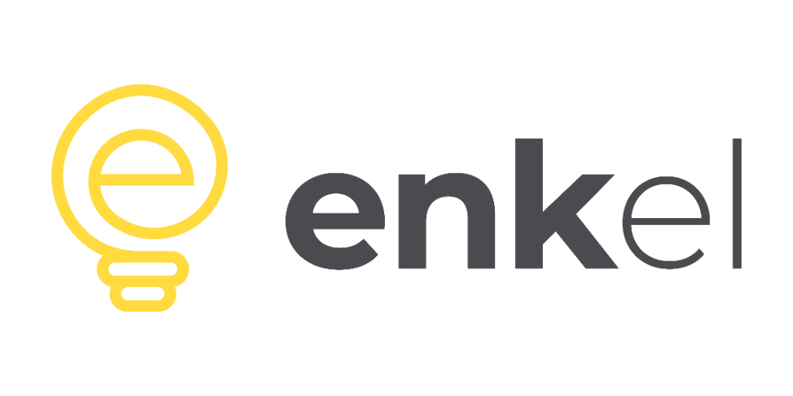
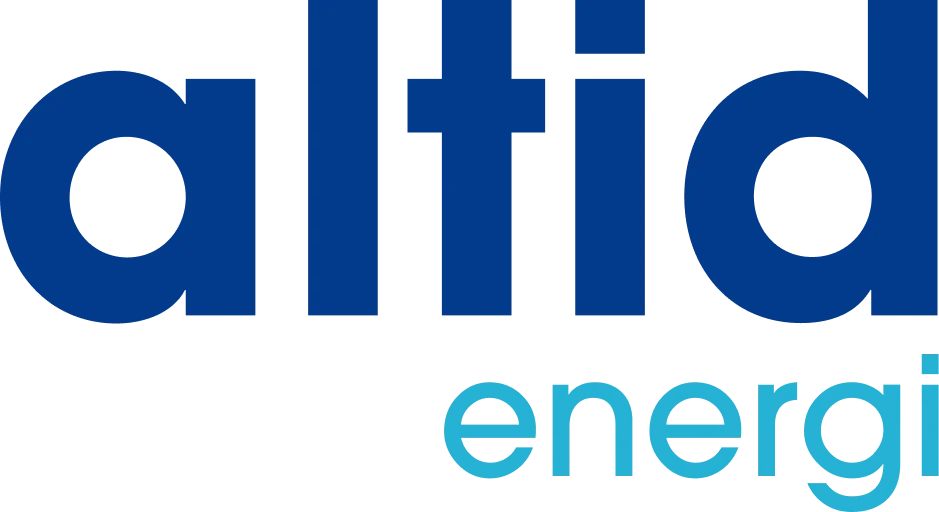

Elselskaber i Danmark: anmeldelser og score
Vi har gennemgået priser, vilkår og kundetilfredshed hos 9 danske elselskaber. Her er de samlet med én score, så du kan se, hvem der både er billige og behandler kunderne ordentligt.
| Nr. | Elselskab | Samlet score | Pris | Tilfredshed | Vilkår | Pris pr. år ved 4.000 kWh | Trustpilot | EPSI 2025 | Anmeldelse |
|---|---|---|---|---|---|---|---|---|---|
| 1 | GaselOdense |
8,5 | 8,3 | 8,0 | 10,0 | 240 kr. | 4,6 | – | Læs anmeldelse |
| 2 |  Enkel EnergiKøbenhavn K |
8,2 | 9,2 | 6,0 | 8,0 | 210 kr. | Ikke tjekket | – | Læs anmeldelse |
| 3 |  Altid EnergiKøbenhavn (Nordhavn) |
8,1 | 9,2 | 5,5 | 8,0 | 210 kr. | 4,1 | – | Læs anmeldelse |
| 4 | go'energiRingkøbing |
7,3 | 6,5 | 8,8 | 8,0 | 380 kr. | 4,7 | 73,2 | Læs anmeldelse |
| 5 | ModstrømKøbenhavn S |
7,1 | 7,3 | 6,0 | 8,0 | 320 kr. | 4,2 | – | Læs anmeldelse |
| 6 | Jysk EnergiHolstebro |
6,7 | 5,8 | 8,0 | 8,0 | 468 kr. | 4,6 | – | Læs anmeldelse |
| 7 | AURAViby J (Aarhus) |
6,2 | 4,8 | 7,2 | 10,0 | 585 kr. | 4,6 | 68,0 | Læs anmeldelse |
| 8 | OKViby J (Aarhus) |
6,2 | 5,1 | 7,9 | 7,5 | 585 kr. | 4,3 | 73,8 | Læs anmeldelse |
| 9 | EWIIKolding |
5,1 | 3,4 | 6,4 | 10,0 | 605 kr. | 4,1 | 69,7 | Læs anmeldelse |
Score fra 0 til 10. Pris vægter 60 %, tilfredshed 25 % og vilkår 15 %. Prisen er inkl. moms og gælder selskabets billigste variable produkt. Tjekket 20. september 2026.
Alle anmeldelser
Gasel anmeldelse
Intet abonnement og kun 6 øre i tillæg. Billigst for små husstande – og du betaler bagud.
Enkel Energi anmeldelse
Spotpris uden tillæg og et lavt abonnement. Findes også med forbrugsafregning og grønt tilvalg.
Altid Energi anmeldelse
Strøm til ren indkøbspris og ét fast abonnement. Nemt at gennemskue og billigst ved højt forbrug.
go'energi anmeldelse
Blandt landets mest tilfredse kunder og en pris i den billige ende. Betales kvartalsvis.
Modstrøm anmeldelse
Lav pris på begge parametre, gratis app og månedlig betaling. Et solidt allround-valg.
Jysk Energi anmeldelse
Andelsejet vestjysk selskab med 0 øre i tillæg, app og gode anmeldelser. Abonnementet er i den høje ende.
AURA anmeldelse
Østjysk andelsselskab med to modeller: lavt abonnement eller 0 øre i tillæg. Betaling bagud.
OK anmeldelse
Danmarks mest tilfredse elkunder ifølge EPSI 2025. To modeller, betaling bagud – men ikke billigst.
EWII anmeldelse
Stor trekantsområde-koncern med el, fiber og ladeløsninger. Stabil service, men pris i den høje ende.
Vilkår hos elselskaberne
| Elselskab | Betaling | Binding | Grøn strøm | Ejerform | Hovedsæde |
|---|---|---|---|---|---|
| Altid Energi | Forud (aconto) | Ingen | Tilvalg | Privatejet | København (Nordhavn) |
| AURA | Bagud (faktisk forbrug), månedlig | Ingen | Tilvalg | Andelsejet | Viby J (Aarhus) |
| Enkel Energi | Forud (kvartal) | Ingen | Tilvalg (Enkel natur) | Privatejet | København K |
| EWII | Bagud, månedlig | Ingen | Tilvalg | Selvejende energikoncern | Kolding |
| Gasel | Bagud (faktisk forbrug) | Ingen | Tilvalg | Del af Energi Fyn-koncernen | Odense |
| go'energi | Forud (kvartal, aconto) | Ingen | Nej (standard) | Vestjysk energiselskab | Ringkøbing |
| Jysk Energi | Forud (aconto) | Ingen | Klimastrøm (tilvalg) | Andelsejet (ca. 30.000 andelshavere) | Holstebro |
| Modstrøm | Forud (aconto), månedlig | Ingen | Nej (standard) | Privatejet | København S |
| OK | Bagud (faktisk forbrug), månedlig | Op til 6 mdr. | Tilvalg | Andelsselskab (a.m.b.a.) | Viby J (Aarhus) |
Sådan vælger du elselskab
Start med prisen, for det er her, forskellen kan måles i kroner. Brug beregneren med dit eget forbrug, og kig på de tre-fire billigste. Forskellen mellem dem er sjældent mere end et par hundrede kroner om året, så derfra giver det mening at se på resten.
Betaling forud eller bagud
Betaler du bagud, betaler du kun for strøm, du har brugt. Betaler du forud, har elselskabet dine penge, indtil opgørelsen kommer. Går selskabet konkurs, er forudbetalte beløb et simpelt krav i boet. Det er sjældent, men det skete for kunderne i Velkommen-koncernen i 2026.
Kundetilfredshed
Trustpilot siger mest om salgs- og oprettelsesoplevelsen, fordi mange selskaber beder nye kunder om en anmeldelse. EPSI's årlige måling spørger et repræsentativt udsnit af eksisterende kunder og siger mere om hverdagen som kunde. Vi bruger begge.
Ejerskab
Andelsselskaber som OK, AURA og Jysk Energi er ejet af kunderne og sender overskud tilbage som rabatter eller støtte til lokalområdet. Privatejede selskaber er ofte skarpere på prisen. Ingen af delene er et kvalitetsstempel i sig selv, men det forklarer, hvorfor priserne ser ud, som de gør.
Grøn strøm
Alle får den samme blanding af strøm i kontakten. Et grønt produkt betyder, at selskabet køber oprindelsesgarantier fra vedvarende energi svarende til dit forbrug. Det koster typisk 1 til 5 øre pr. kWh og er hos de fleste et tilvalg.
Konkurser og lukkede elselskaber
Elmarkedet har været hårdt de seneste år, og flere selskaber er lukket eller overtaget. Går dit elselskab konkurs, bliver strømmen ikke afbrudt. Du overføres til en anden leverandør og kan derefter frit skifte. Forudbetalte beløb er derimod et krav i konkursboet.
| Elselskab | Status | Det skal kunderne vide |
|---|---|---|
| Velkommen | Erklæret konkurs 7. august 2026 | Kunderne er overført til anden leverandør. Du kan frit skifte. |
| Nettopower | Under konkursbehandling | Samme ejerkreds som Velkommen. |
| Vedvarende | Under konkursbehandling | Samme ejerkreds som Velkommen. |
| b.energy | Under konkursbehandling | Del af Velkommen-koncernen. |
| Power Fuel | Konkursbegæring indgivet | Følg Forbrugerrådet Tænks vejledning, hvis du har penge til gode. |
Tidligere lukkede eller overtagne elselskaber tæller blandt andre Edison, Energiselskabet Elg, HomeCharge, iWatt, Preasy, StrømFordel, Strømtid, Zapp Energy og Zosani. Er du i tvivl om, hvem der leverer din strøm i dag, kan du se det på eloverblik.dk.
Spørgsmål og svar om elselskaber
Hvor mange elselskaber er der i Danmark?
Der er omkring 50 aktive elhandelsselskaber, som sælger strøm til private. De fleste er landsdækkende, så du kan vælge frit, uanset hvor du bor.
Hvordan beregner I scoren?
Scoren går fra 0 til 10 og består af tre dele: pris (60 procent), kundetilfredshed målt på Trustpilot og i EPSI's undersøgelse (25 procent) og vilkår som binding og betalingsform (15 procent). Hele formlen står under Sådan sammenligner vi.
Hvilket elselskab har de mest tilfredse kunder?
I EPSI's måling for 2025 lå OK øverst med 73,8 point, fulgt af SEF Energi og go'energi. På Trustpilot ligger go'energi højest blandt selskaberne i vores sammenligning med 4,7.
Hvilke elselskaber skal man undgå?
Hold dig fra selskaber, der ikke oplyser det fulde tillæg tydeligt, som ringer uopfordret, eller hvis priser på elpris.dk ikke passer med hjemmesiden. Forbrugerrådet Tænk offentliggør hvert år en test af elselskaber, hvor selskaber med påbud eller uigennemskuelige gebyrer dumper.
Hvad skete der med Velkommen?
Velkommen A/S blev erklæret konkurs i august 2026. Kunderne i Velkommen og de tilknyttede selskaber blev overført til en anden leverandør. Er du berørt, kan du frit skifte til et andet elselskab, og strømmen afbrydes ikke.
Skrevet af Emil Rostgaard
Stifter og redaktør på SkiftElaftale.dk · LinkedIn
Emil står bag SkiftElaftale.dk og gennemgår elselskabernes priser og vilkår. Alle tal kontrolleres mod selskabernes indberetninger til elpris.dk og deres egne prisblade, og hver pris har en dato. Siden drives af Emro Media, CVR 46727533. Om os · Vores metode
Se hvad du kan spare
Træk i forbruget og få listen sorteret efter, hvad der er billigst for netop dig.